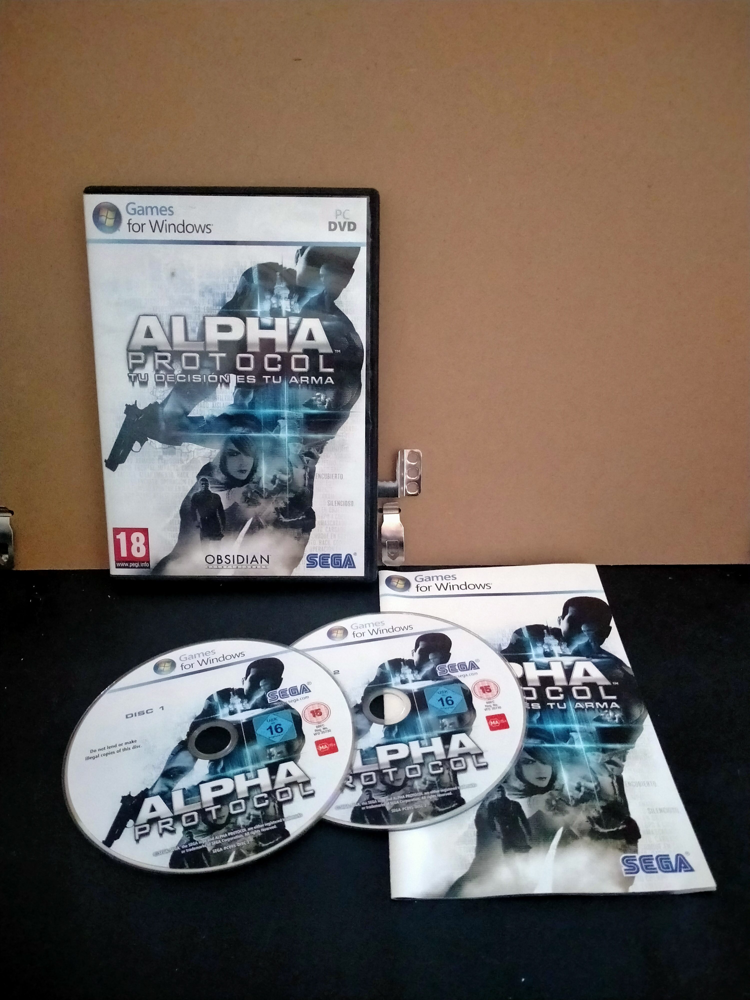

Ficha #000000
Alpha Protocol: Tu Decisión es tu Arma
Juego de rol y acción ambientado en un mundo de espionaje moderno, donde las decisiones del jugador influyen directamente en la historia y en las relaciones con otros personajes.
- Formato
- DVD Case
- Plataforma
- WinXP Windows Vista Win7
- Género
- Acción Rol
- Serie
- Todos Games for windows DVD Case
- Desarrollador
- Obsidian Entertainment
- Distribuidor
- SEGA
- EAN
- —
Contenido de la edición
- Pendiente de documentación.
Preservación
- Protección
- SecuROM
- Formato recomendado
- MDF/MDS
- Jugable en virtualización
- Sí
Alcohol 120% - Perfil SecuROM New